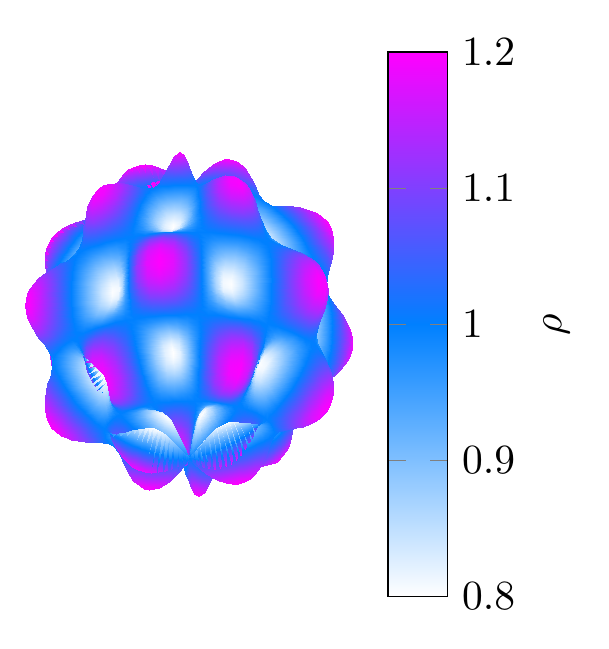
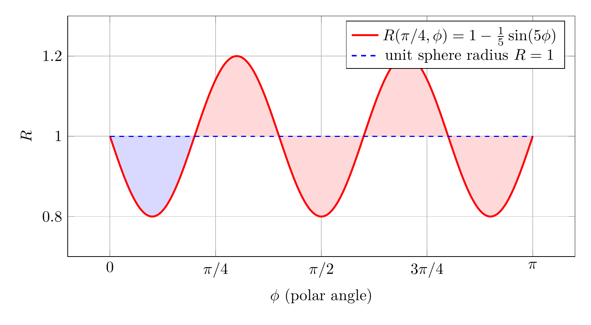

Please solve the problem in the following image.
(Image `20260929_203006_585704_utc_0800_0.png`. Alt text: Image: human_20260929_203006_585704_utc_0800)
20260929_203006_585704_utc_0800_0.png
End of problem
Answer
## 1. Set up the volume integral
The tumor surface is
$$
\rho=R(\theta,\phi)=1+\frac15\sin(6\theta)\sin(5\phi).
$$
For each direction $(\theta,\phi)$, the enclosed region extends from $\rho=0$ to $\rho=R(\theta,\phi)$. In spherical coordinates $dV=\rho^2\sin\phi\,d\rho\,d\phi\,d\theta$, so
$$
V=\int_0^{2\pi}\!\!\int_0^\pi\!\!\int_0^{R(\theta,\phi)} \rho^2\sin\phi\,d\rho\,d\phi\,d\theta
=\frac13\int_0^{2\pi}\!\!\int_0^\pi R(\theta,\phi)^3\sin\phi\,d\phi\,d\theta.
$$
The plot below shows the bumpy sphere together with the unit sphere for reference.
---
\documentclass[border=6pt]{standalone}
\usepackage{pgfplots}
\pgfplotsset{compat=1.18}
\begin{document}
\begin{tikzpicture}
\begin{axis}[
view={35}{22},
axis equal image,
axis lines=none,
colormap/cool,
clip=false,
colorbar,
colorbar style={ylabel={$\rho$}},
]
\addplot3[
surf,
shader=interp,
domain=0:360,
y domain=0:180,
samples=81,
samples y=81,
point meta={sqrt(x^2+y^2+z^2)},
point meta min=0.8,
point meta max=1.2,
]
({(1+0.2*sin(6*x)*sin(5*y))*sin(y)*cos(x)},
{(1+0.2*sin(6*x)*sin(5*y))*sin(y)*sin(x)},
{(1+0.2*sin(6*x)*sin(5*y))*cos(y)});
\end{axis}
\end{tikzpicture}
\end{document}

pgfplots_0.png
---
## 2. Expand and integrate angularly
Let $a=\frac15$ and $S=\sin(6\theta)\sin(5\phi)$. Then
$$
R^3=(1+aS)^3=1+3aS+3a^2S^2+a^3S^3.
$$
Integrating term by term:
- Constant term: $\displaystyle \int_0^{2\pi}\!\!\int_0^\pi \sin\phi\,d\phi\,d\theta=4\pi$.
- Linear term: it contains $\displaystyle \int_0^{2\pi}\sin(6\theta)\,d\theta=0$.
- Cubic term: it contains $\displaystyle \int_0^{2\pi}\sin^3(6\theta)\,d\theta=0$.
Thus only the quadratic term survives:
$$
3a^2\left(\int_0^{2\pi}\sin^2(6\theta)\,d\theta\right)
\left(\int_0^\pi \sin^2(5\phi)\sin\phi\,d\phi\right).
$$
The first integral is
$$
\int_0^{2\pi}\sin^2(6\theta)\,d\theta=\pi.
$$
For the second, use $\sin^2(5\phi)=\frac{1-\cos(10\phi)}2$:
$$
\int_0^\pi \sin^2(5\phi)\sin\phi\,d\phi
=1-\frac12\int_0^\pi \cos(10\phi)\sin\phi\,d\phi.
$$
Since $\cos(10\phi)\sin\phi=\frac12(\sin(11\phi)-\sin(9\phi))$,
$$
\int_0^\pi \cos(10\phi)\sin\phi\,d\phi
=\frac12\left(\frac{2}{11}-\frac{2}{9}\right)=-\frac{2}{99}.
$$
Therefore
$$
\int_0^\pi \sin^2(5\phi)\sin\phi\,d\phi
=1-\frac12\left(-\frac{2}{99}\right)=\frac{100}{99}.
$$
The equatorial cross-section $\phi=\pi/2$ displays the six azimuthal bumps:
$$
R(\theta,\pi/2)=1+\frac15\sin(6\theta).
$$
---
pgfplots_1.png
---
The meridional cross-section at $\theta=\pi/4$ shows the five bumps in the polar direction:
$$
R(\pi/4,\phi)=1-\frac15\sin(5\phi).
$$
---
\documentclass[border=10pt]{standalone}
\usepackage{pgfplots}
\usepgfplotslibrary{fillbetween}
\pgfplotsset{compat=1.18}
\begin{document}
\begin{tikzpicture}
\begin{axis}[
width=13cm,
height=7cm,
xlabel=$\phi$ (polar angle),
ylabel=$R$,
domain=0:180,
samples=500,
ymin=0.7,
ymax=1.3,
xtick={0,45,90,135,180},
xticklabels={$0$,$\pi/4$,$\pi/2$,$3\pi/4$,$\pi$},
grid=both,
legend style={at={(0.98,0.98)}, anchor=north east},
]
\addplot[name path=A, very thick, red] {1-0.2*sin(5*x)};
\addlegendentry{$R(\pi/4,\phi)=1-\frac{1}{5}\sin(5\phi)$}
\addplot[name path=B, dashed, thick, blue] {1};
\addlegendentry{unit sphere radius $R=1$}
\addplot[red!15] fill between[of=A and B, split, every segment no 0/.style={blue!15}, every segment no 1/.style={red!15}];
\end{axis}
\end{tikzpicture}
\end{document}

pgfplots_2.png
---
## 3. Combine the contributions
The quadratic term is
$$
3a^2\cdot \pi\cdot \frac{100}{99}=\frac{100\pi a^2}{33}.
$$
Hence
$$
V=\frac13\left(4\pi+0+\frac{100\pi a^2}{33}+0\right)
=\frac{4\pi}{3}+\frac{100\pi a^2}{99}.
$$
With $a=\frac15$,
$$
V=\frac{4\pi}{3}+\frac{100\pi}{99}\cdot\frac1{25}
=\frac{4\pi}{3}+\frac{4\pi}{99}
=\frac{132\pi+4\pi}{99}
=\frac{136\pi}{99}.
$$
Numerically,
$$
V\approx 4.3157232413.
$$
A computer algebra system gives the same result. For example, in sympy:
import sympy as sp
t, p = sp.symbols('theta phi')
R = 1 + sp.sin(6*t)*sp.sin(5*p)/5
V = sp.integrate(sp.integrate(R**3*sp.sin(p), (p,0,sp.pi)), (t,0,2*sp.pi))/3
sp.simplify(V) # 136*pi/99
Therefore the volume enclosed by this tumor model is
$$
\boxed{\frac{136\pi}{99}\approx 4.3157}.
$$